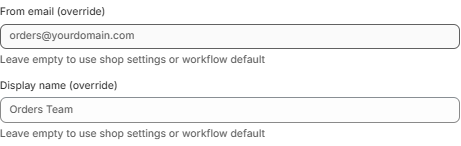

Integrations
Connect Email, Slack, and Google Sheets to power your workflow actions.
Email Integration
Send automated emails from your own domain through your workflows.
Step 1: Add Your Domain
yourdomain.com)Step 2: Configure DNS Records
Add the generated DNS records at your domain registrar (GoDaddy, Cloudflare, Route53, etc.):
| Record Type | Purpose |
|---|---|
| MX | Mail routing |
| SPF (TXT) | Sender authorization |
| DKIM (CNAME) | Email signing / authentication |
| DMARC (TXT) | Email policy |
| CNAME | Verification |
Step 3: Verify Your Domain
After adding DNS records, click Verify Domain. Status will show Verified ✅, Pending ⏳, or Failed ❌.
Step 4: Configure Sender
Set your Sender Email (must use your verified domain), optional Sender Name, and Reply-To Email.

Step 5: Customize Branding (Optional)
Upload your logo, set primary colors, and customize the email footer for all automated emails.
Slack Integration
Post automated messages to your Slack workspace from workflows.
Option A: Bot Token (Recommended)
chat:write and chat:write.publicOption B: Webhook URL (Simpler)
A Webhook URL is easier but only posts to one channel. Create an incoming webhook at Slack, paste the URL in OpsPilot, and verify.
| Feature | Bot Token | Webhook |
|---|---|---|
| Post to multiple channels | ✅ Yes | ❌ One channel only |
| Per-workflow channel override | ✅ Yes | ❌ No |
| Setup complexity | Medium | Easy |
Google Sheets Integration
Log data from workflows directly into Google Sheets — great for reports and audit trails.
Step 1: Create a Service Account
Step 2: Share Your Spreadsheet
Open your Google Sheet, click Share, and add the service account email (from the JSON file) as an Editor.